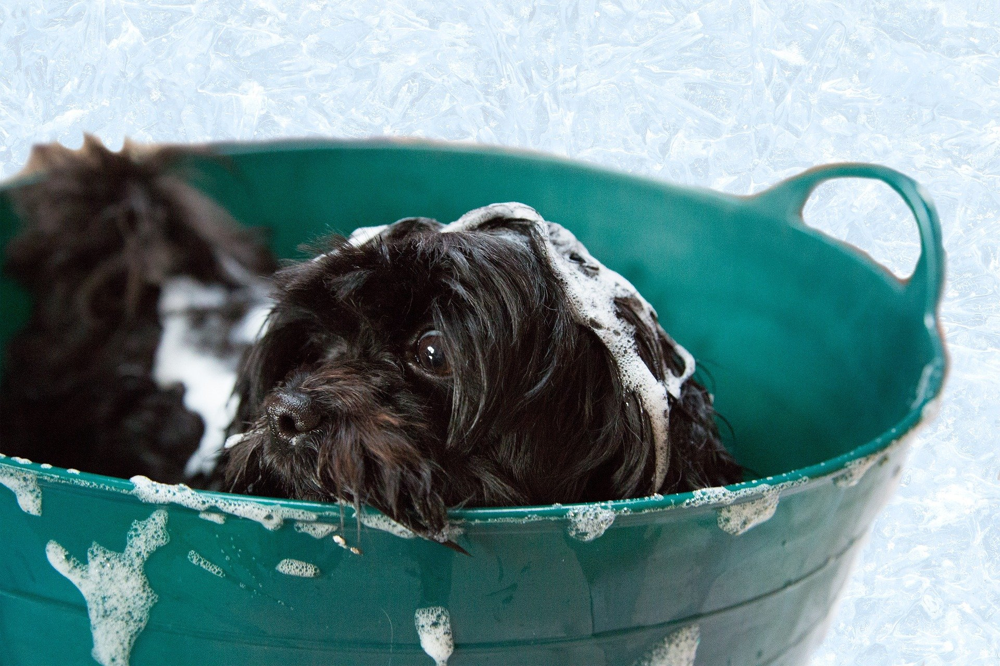
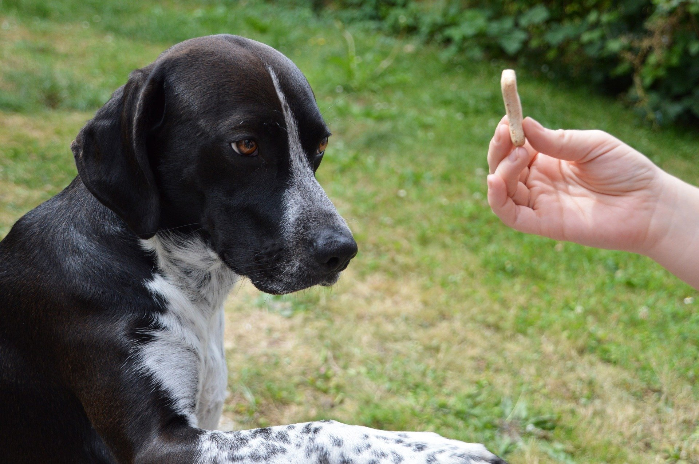

Blog
Nós da PetDevelopers criamos esse Blog com o intuito de tirar todas as suas duvidar e ajudar você a entender melhor a importancia que se deve dar para o cuidado e bem estar do seu Pet no seu dia-a-dia.
Com que frequência voçê deve dar banho no seu cãozinho?
É possível dar banho no seu cãozinho a cada quinze dias ou sempre que ele estiver sujo não existe especificamente uma ordem para se dar banho. A frequência pode aumentar caso ele fique muito tempo no quintal da casa e acabe se sujando mais que o comum no dia-a-dia. Manter o seu dog bem-higienizado é sempre bom para o bem-estar dele, por isso os banhos regulares são sempre essenciais até mesmo para você não ficar com a casa suja por conta do seu bichinho de estimação andando pra lá e pra cá .
Não existe uma frequência certa para os banhos deve-se ter uma conversa com o veterinários e os assistentes que cuidam do banhos dos pet, tudo depende da raça, da pelagem, se tem alergias, da própria rotina do pet. Porem deve se lembrar também que os cuidados com a pelagem são muito importantes, não só por estética, mas para a saúde do pet também. Então sempre que for dar banho não se pode esquecer de escovar os pelo e analisar se tem algum carapato ou feridas por de baixo do pelo. Nós podem doer e levar a infecções de pele e até atrapalhar no dia-a-dia do pet então tenha sempre atenção .
Geralmente o banhos toda semana retira a oleosidade produzida pela pele, podendo acarretar em coceira, descamação da pele e a alergias. Para um cachorro bem cuidado e que não tem costume de ficar muito sujo, acreditasse que apenas um banho ao mês seja mais que o necessário. Porém tudo depende das circuntancias como ja foi dito acima.
Porque devemos adestrar nossos cães?
Perguntar engraçada não pois muitas pessoas acreditam que quando se compra um cachorro ela só vai ter o trabalho de cuidar, alimentar e limpar a bagunça do seu pet, mas ao contrário do que todo mundo pensa de ter um cachorro vai muito além de apenas isso.
Vamos a ponto que nos interessa que é sobre o adestramento por que devemos levar o pet para adestrar, e te contamos o porquê seu pet pode ter diversas dificuldades que você muitas vezes nem imagina, a mais comum que as pessoas contratam os adestradores e porquê o pet é agressivo e isso pode ser só a ponta do iceberg, seu dog e muito agressivo por que já é da natureza da sua raça ou ele foi adotado e era judiado por seu antigo dono outros pontos que muitas vezes não conhecemos são as fobias por sons que fazem eles ficarem atordoados. Muitas vezes já vimos quando ouvimos um barulho bem alto como podem incomodar nossos cães, como o barulho de trovão, fogos de artifícios e buzinas e campainhas.
E aqui vai uma novidade que poucos devem saber, enquanto para nós humanos, conseguimos ouvir sons com frequência entre 16Hz e 20.000 Hz, o ouvido dos cães muito mais sensível que o nosso e escuta sons entre 10Hz e 40.000 Hz. Portanto procure um adestrador profissional para ajudá-lo a se acostumar mais. E pôr fim às vezes seu cachorro pode naturalmente ser bonzinho e somente precisa ser adestrado para ser mais educado e obedecer suas ordens de forma mais natural.

Como cuidar dos seu filhotes de gatos da maneira certa!
A chegada de uma ninhada gatinho deve exigir cuidados extras com a saúde e também com a sua casa para que a adaptação ocorra sem muito estresse. A fase mais bela de todos dos animais é quando eles são pequenos! É por isso que filhotes de gato chamam atenção pois são muito fofos e seus futuros donos, que não resistem aos encantos e acabam levando-os para casa! A adaptação dos filhotes ao novo ambiente e a sua adaptação em relação às necessidades dos seus felinos pode demorar demais, gerando um estresse na rotina da família. O lado bom é que, com o tempo, os donos ganham certa experiência para cuidar cada vez melhor de seus pets.
Quando os gatos são filhotes, é preciso redobrar os cuidados para que eles se tornem adultos saudáveis. Confira pequenas dicas para saber tudo sobre como cuidar filhotes.
-
Até os 45 dias de vida.
Os gatinhos não devem ser separados de suas mães até completarem 45 dias de vida, não importa o quanto os donos desejem levá-los para casa a não ser que leve a mãe junto ou ela também já faça parte da família, e muito importante que dentro desses 45 eles se alimente especificamente do leite materno para ficar mais forte rápido. -
Cuidados com o ambiente.
Nas três primeiras semanas de vida, o gato filhote é muito frágil e nem consegue regular a temperatura corporal sozinho. Geralmente a mãe se encarrega de mantê-los aquecidos, então prepare uma área especial para a mãe e os filhotes, de preferência confortável, quente e reservado. Forre o local com um colchonete, almofadas e mantas grossas. Não se esqueça de sempre manter tudo limpo para manter a saúde dos bebês. -
Brincadeiras.
Quando filhotes, os gatos têm muita energia e lidar com ela pode ser um desafio para tutores de primeira viagem. Prepare-se para brincar bastante e tenha acessórios para ajudar a “cansar” o seu pet. Arranhadores são um bom brinquedo para que os gatos gastem as unhas e deixem seu instinto aflorar. A vontade de colocar as garras p6ara fora é normal em felinos e pode ser feita de forma saudável e inofensiva desde cedo com a ajuda desses acessórios. Tome cuidado ao comprar brinquedos para os filhotes! Veja se não há nenhuma parte solta que possa ser engolida ou partes que possam machucá-los, já que eles ainda são pequenos e frágeis.